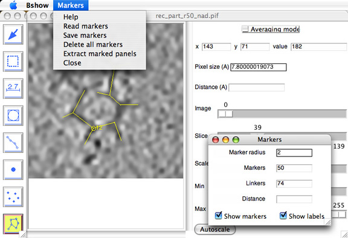

- Markers menu:
- Read markers - reads markers and linkers from a STAR file.
- Save markers - writes markers and linkers to a STAR file.
- Delete all markers - delete all markers and linkers in memory (no recovery!).
- Extract marked panels - extracts panels from multi-level masks.
- Parameters:
- Marker radius - radius of circle drawn for each marker.
- Markers - number of markers.
- Linkers - number of linkers.
- Distance - distance between current and previously selected markers.
- Radiobuttons to display/hide markers and lables.

Mouse controls:
Quick reference:
- Left button: create a marker
- Right button: create a linker from the last selected marker
- Shift - left button: delete a marker
- Shift - right button: delete a linker
Clicking the left mouse button in an empty region on the image creates
a new marker. Clicking it close to a marker will select that marker.
Only one
marker is selected at any time. A marker can be dragged within the xy
plane.
To move a marker up or down slices, use the "u" or "d" keys,
respectively.
To jump to the selected marker, use the "s" key.
Clicking the right mouse button in an empty region creates a linker
from the
last selected marker. If there is no marker selected, nothing will
happen.
Clicking close to an existing marker creates a link from the last
selected
marker to that one.
To delete a marker, hold down the shift key and click the left button
on the marker. All linkers associated with the marker will also be
deleted.
To delete a linker, hold the shift key and click the right button
close to the linker.
Saving and reading markers:
The markers can be saved in a STAR file with the menu option
"Markers/Save markers" and read back with the menu option "Markers/Read
markers".